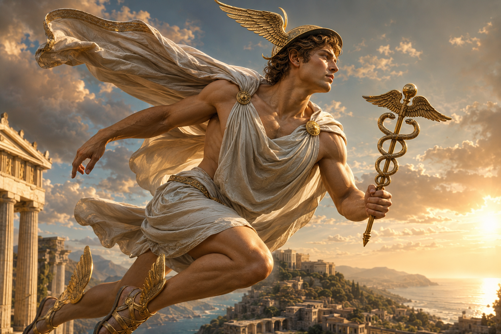

Yunan mitolojisinde Hermes denildiğinde çoğu kişinin aklına kanatlı sandaletleriyle tanrıların haberlerini taşıyan genç bir tanrı gelir. Bu tanım yanlış değildir; ancak Hermes'i anlamak için yeterli de değildir. Çünkü Hermes yalnızca Olimpos'un habercisi değildir. O, sınırların, yolların, geçişlerin, yolcuların, tüccarların, çobanların, hırsızların, hitabetin, zekânın ve ölü ruhlara rehberlik etmenin tanrısıdır. Bu kadar farklı alanın aynı tanrıda birleşmesi ilk bakışta dağınık görünebilir; fakat Hermes'in gerçek gücü tam olarak burada saklıdır. O, bir yerden başka bir yere geçişin olduğu her noktada karşımıza çıkar.
Hermes'i diğer Olimpos tanrılarından ayıran temel özellik, onun sabit bir alanın değil, hareketin tanrısı olmasıdır. Zeus göğün, Poseidon denizin, Hades yeraltının, Hera evliliğin, Athena bilgelik ve stratejinin tanrıçası olarak belirli alanlarla ilişkilendirilirken Hermes sınırları aşar. Tanrılarla insanlar, yaşayanlarla ölüler, şehirle kır, ticaretle hile, düzenle oyun arasında gidip gelir. Bu yüzden Hermes, Yunan mitolojisinin en esnek, en hareketli ve en zeki tanrılarından biridir.
Antik Yunan dünyasında yollar ve sınırlar yalnızca coğrafi çizgiler değildi. Bir köyden şehre geçmek, yabancı bir ülkeye girmek, pazara çıkmak, ticaret yapmak, mesaj taşımak ya da ölümden sonra ruhun yeraltı dünyasına yönelmesi, her biri ayrı bir geçiş anıydı. Hermes bu geçişlerin koruyucusu olarak görülürdü. Bu nedenle onun kutsal işaretleri olan herm adı verilen taş sütunlar yol kenarlarına, kapı önlerine ve sınır noktalarına dikilirdi. Böylece Hermes yalnızca mitolojik hikâyelerde değil, Antik Yunan insanının gündelik yaşamında da sürekli karşılaşılan bir tanrıydı.
Hermes'in karakteri aynı zamanda büyük bir çelişki taşır. Bir yandan tanrıların güvenilir habercisidir; diğer yandan hırsızların ve kurnazların koruyucusudur. Bir yandan ticaretin düzenli işlemesini sağlar; diğer yandan pazarlık, ikna ve aldatma becerisiyle ilişkilendirilir. Bir yandan ölü ruhları Hades'e götüren ciddi bir rehberdir; diğer yandan daha bebekken Apollon'un sığırlarını çalan oyunbaz bir tanrıdır. Bu çelişkiler Hermes'i tutarsız yapmaz; tam tersine onun sınır tanrısı olduğunu gösterir. Hermes, düzen ile düzensizlik arasındaki ince çizgide hareket eder.
Bu makalede Hermes'in kim olduğunu, nasıl doğduğunu, Apollon'un sığırlarını neden çaldığını, lir ile nasıl ilişkilendirildiğini, neden haberci tanrı olarak kabul edildiğini, kanatlı sandaletlerinin ve kerykeion asasının anlamını, ölü ruhlara nasıl rehberlik ettiğini, tüccarlar ve hırsızlarla neden bağlantılı olduğunu, Roma mitolojisindeki Mercurius ile ilişkisini, sanat tarihindeki yerini ve modern popüler kültürde nasıl yorumlandığını ayrıntılı biçimde ele alacağız. Çünkü Hermes yalnızca hızlı koşan bir haberci değil; Antik Yunan'ın hareket, zekâ, dil, ticaret, sınır ve geçiş kavramlarını anlamak için en önemli tanrılarından biridir.
Hermes Kimdir?
Hermes, Yunan mitolojisinde Zeus ile Maia'nın oğlu olan Olimpos tanrılarından biridir. Tanrıların habercisi olarak görev yapar; ancak yetki alanı bunun çok ötesine uzanır. Yolcuların, tüccarların, çobanların, hırsızların, hatiplerin, elçilerin ve sınırların koruyucusu olarak kabul edilir. Ayrıca ölülerin ruhlarına yeraltı dünyasına kadar rehberlik eden psychopompos, yani "ruh kılavuzu" rolüyle de Yunan dininde son derece önemli bir yere sahiptir.
Hermes'in annesi Maia, Atlas'ın kızlarından biri olan Pleiadlar arasında sayılır. Mitolojiye göre Kyllene Dağı'ndaki bir mağarada yaşar ve Hermes burada dünyaya gelir. Bu doğum yeri son derece anlamlıdır. Çünkü mağara, dağ ve yol kavramları Hermes'in karakteriyle yakından ilişkilidir. O sarayda doğan ağırbaşlı bir tanrı değil, sınır mekânında dünyaya gelen hareketli ve kurnaz bir figürdür. Daha doğduğu ilk gün yaptığı şeyler bile onun nasıl bir tanrı olacağını açıkça gösterir.
Hermes'in en dikkat çekici özelliklerinden biri zekâsıdır. Ancak bu zekâ Athena'nın temsil ettiği stratejik ve düzen kurucu bilgelikten farklıdır. Athena aklı disiplin ve planlama ile ilişkilendirirken Hermes'in zekâsı hızlı düşünme, söz ustalığı, pratik çözüm bulma ve gerektiğinde hile yapabilme yeteneğiyle öne çıkar. Bu nedenle Hermes, Yunan mitolojisinde metis denilen kıvrak zekânın en canlı temsilcilerinden biri olarak görülebilir.
Antik kaynaklarda Hermes çoğu zaman genç, çevik ve hareket hâlinde tasvir edilir. Elinde kerykeion adı verilen haberci asası, ayağında kanatlı sandaletleri ve başında geniş kenarlı yolcu şapkası bulunur. Bu semboller rastgele değildir. Kanatlı sandaletler hızını, yolcu şapkası hareket hâlindeki kimliğini, asa ise haberci ve arabulucu rolünü temsil eder. Hermes'in görünümü bile onun sürekli yolda olan bir tanrı olduğunu anlatır.
Hermes'in en önemli yönlerinden biri de arabuluculuğudur. Tanrılar arasında mesaj taşır, Zeus'un emirlerini insanlara iletir, kahramanlara yol gösterir, gerektiğinde insanları tehlikeden kurtarır ve ölü ruhları yeraltına ulaştırır. Bu nedenle Hermes, yalnızca bir haberci değil, farklı dünyalar arasında güvenli geçiş sağlayan ilahi rehberdir.
İşte Hermes'i Yunan mitolojisinin en özgün tanrılarından biri yapan özellik de budur. O ne yalnızca düzenin ne de yalnızca kaosun tarafındadır. Sınırların üzerinde durur, kapıları açar, yolları gösterir ve geçişleri mümkün kılar. Bu nedenle Hermes'i anlamak, Antik Yunan'ın hareket, ticaret, dil, yolculuk ve ölüm sonrası geçiş hakkındaki düşüncelerini anlamak demektir.
Hermes'in Doğumu ve Daha İlk Gününde Yaptıkları
Hermes'in doğumu, Yunan mitolojisinin en sıra dışı anlatılarından biridir. Pek çok Olimpos tanrısının çocukluğu hakkında ayrıntılı bilgiler bulunmazken, Hermes daha doğduğu ilk gün gerçekleştirdiği olağanüstü olaylarla dikkat çeker. Antik yazarlar bu hikâyeyi yalnızca eğlenceli bir çocukluk macerası olarak anlatmazlar. Aksine Hermes'in ileride nasıl bir tanrı olacağını daha bebekken gösteren sembolik bir başlangıç olarak değerlendirirler. Bu nedenle Hermes'in doğum hikâyesi, karakterinin bütün temel özelliklerini içinde barındıran en önemli anlatılardan biridir.
Hermes'in annesi Maia, Titan Atlas'ın kızlarından biridir. Zeus, Hera'nın dikkatini çekmemek için geceleri gizlice Kyllene Dağı'ndaki mağaraya gelir ve Maia ile birlikte olur. Hermes de bu mağarada dünyaya gelir. Doğumun mağarada gerçekleşmesi tesadüf değildir. Antik Yunan düşüncesinde mağaralar çoğu zaman sınır mekânları olarak görülür. Ne tamamen medeniyetin içindedirler ne de tamamen vahşi doğanın dışında. Hermes'in daha doğduğu anda böyle bir geçiş alanında bulunması, onun bütün yaşamı boyunca sınırları aşan bir tanrı olacağının ilk işaretidir.
Mitolojiye göre Hermes doğduğu gün olağanüstü bir hızla büyür. Beşikte yatan sıradan bir bebek gibi davranmak yerine mağaradan çıkar, çevresini keşfetmeye başlar ve kısa süre içinde zekâsını ortaya koyacak ilk icadını gerçekleştirir. Yolda karşılaştığı bir kaplumbağanın kabuğunu alır, üzerine hayvan bağırsağından teller gererek tarihin ilk lirini yapar. Antik kaynaklarda bu olay yalnızca bir müzik aletinin icadı değildir. Hermes'in doğaya bakarak yeni çözümler üretebilen yaratıcı zekâsının ilk örneğidir. O, hazır olanı kullanmaz; elindeki sıradan nesneleri bambaşka bir amaca dönüştürür. Bu özellik daha sonraki bütün mitlerinde tekrar karşımıza çıkacaktır.
Hermes'in doğum günü yaptığı ikinci büyük iş ise çok daha şaşırtıcıdır. Henüz birkaç saatlik bir bebek olmasına rağmen mağaradan ayrılır ve üvey kardeşi Apollon'un kutsal sığırlarını çalmaya karar verir. İlk bakışta bu olay yalnızca yaramaz bir çocuk hikâyesi gibi görünür. Ancak Antik Yunan mitolojisinde bu anlatının çok daha derin anlamları vardır. Hermes burada yalnızca hırsızlık yapmaz; zekâsını, planlama yeteneğini ve karşısındakini yanıltma becerisini gösterir. Böylece ileride tüccarların, pazarlık ustalarının ve hatta hırsızların koruyucusu olacağını daha ilk gününden ortaya koymuş olur.
Sığırları çalarken kullandığı yöntem de son derece dikkat çekicidir. Hermes hayvanların ayak izlerini ters çevirerek yürütür. Böylece onları takip eden kişi sürünün tam ters yöne gittiğini zanneder. Kendi ayak izlerini gizlemek için de dallardan yaptığı ilkel ayakkabılar kullanır. Bu ayrıntılar, Antik Yunan mitolojisinin en eski dedektif hikâyelerinden biri olarak bile değerlendirilebilir. Çünkü Hermes fiziksel gücüyle değil, aklıyla üstünlük sağlar. Onun gerçek silahı hızından önce zekâsıdır.
Bütün bu olaylar aynı gün içinde gerçekleşir. Daha doğduğu gün hem yeni bir müzik aleti icat etmiş, hem kusursuz bir hırsızlık planı hazırlamış hem de tanrıların dikkatini üzerine çekmiştir. Antik kaynakların bu olağanüstü çocukluk anlatısını tercih etmesinin nedeni açıktır. Hermes sıradan biçimde büyüyen bir tanrı değildir. O, doğduğu andan itibaren hareket eden, düşünen, üreten ve sınırları zorlayan ilahi bir figürdür.
Bu hikâye aynı zamanda Hermes'in neden diğer Olimpos tanrılarından farklı görüldüğünü de açıklar. Athena bilgeliğini zaman içinde gösterir, Apollon büyüyerek Delphi'nin efendisi olur, Ares savaş meydanlarında öne çıkar. Hermes ise henüz bebekken bütün karakterini ortaya koyar. Onun zekâsı sonradan kazanılmış bir özellik değil; doğuştan gelen ilahi gücünün ayrılmaz parçasıdır.
Hermes Neden Apollon'un Sığırlarını Çaldı?
Hermes'in Apollon'un sığırlarını çalması, Yunan mitolojisinin en eğlenceli olduğu kadar en sembolik anlatılarından biridir. Bu hikâye ilk bakışta yalnızca yaramaz bir bebeğin yaptığı hırsızlık gibi görünür. Oysa antik metinler dikkatle incelendiğinde anlatının asıl amacının Hermes'i suçlu göstermek değil, onun temsil ettiği ilahi zekâyı ve arabulucu karakteri ortaya koymak olduğu anlaşılır. Çünkü hikâyenin sonunda iki kardeş düşman olmaz; aksine Olimpos'un en güçlü iş birliklerinden biri doğar.
Hermes, Apollon'un sürüsünü çaldıktan sonra iz bırakmamak için olağanüstü bir plan uygular. Sığırların ayaklarını geriye doğru yürütür, böylece onları takip eden kişi hayvanların tam ters yöne gittiğini düşünür. Kendi ayak izlerini de dallardan yaptığı özel sandaletlerle gizler. Bu ayrıntılar, Hermes'in yalnızca hızlı değil; aynı zamanda ayrıntıları hesaplayan üstün bir zekâya sahip olduğunu gösterir. Antik Yunan dünyasında bu tür kıvrak düşünme yeteneği metis kavramıyla ifade edilir ve Hermes bu özelliğin en önemli temsilcilerinden biri kabul edilir.
Apollon kısa süre sonra sürüsünün kaybolduğunu fark eder ve araştırmaya başlar. İzleri takip ettiğinde hiçbir şey mantıklı görünmez. Sonunda Hermes'in mağarasına ulaşır. Karşısında ise beşiğinde yatan masum bir bebek vardır. Hermes son derece ciddi bir ifadeyle henüz doğduğunu, yürümeyi bile bilmediğini, böyle büyük bir hırsızlığı yapmasının imkânsız olduğunu söyler. Bu sahne, antik edebiyatın en eski mizah örneklerinden biri olarak kabul edilir. Çünkü okuyucu gerçeği bilmektedir; Apollon ise açıkça kandırılmaya çalışılmaktadır.
Sonunda anlaşmazlık Zeus'un önüne taşınır. Zeus, Hermes'in söylediklerine gülse de gerçeği bildiği için ondan sürüyü geri vermesini ister. İşte hikâyenin en önemli bölümü burada başlar. Hermes biraz önce yaptığı liri çıkarır ve çalmaya başlar. Apollon bu olağanüstü sesi duyduğunda büyülenir. Müziğin güzelliği karşısında öfkesi tamamen kaybolur. Bunun üzerine Hermes liri Apollon'a hediye eder. Apollon da karşılık olarak sürüleri ve bazı kutsal ayrıcalıkları Hermes'e bırakır. Böylece iki tanrı arasında ömür boyu sürecek dostluk başlar.
Bu değiş tokuş, mitolojide son derece önemli bir semboldür. Hermes zekâsını ve yaratıcılığını kullanarak yeni bir sanat ortaya çıkarır; Apollon ise bu sanatı koruyan tanrı hâline gelir. Başka bir ifadeyle lirin mucidi Hermes'tir, fakat onun ilahi ustası Apollon olur. Bu ayrıntı, Antik Yunan düşüncesinde bilginin paylaşılması ve yeteneklerin doğru kişiye aktarılması fikrini de yansıtır.
Bu anlatının Hermes açısından en önemli sonucu ise onun resmî görevlerinin şekillenmesidir. Zeus, Hermes'in olağanüstü zekâsını ve ikna kabiliyetini gördükten sonra onu tanrıların habercisi olarak görevlendirir. Çünkü farklı dünyalar arasında güvenle gidip gelebilecek, gerektiğinde sorunları çözebilecek en uygun kişi odur. Böylece Hermes'in çocuklukta yaptığı "suç", aslında gelecekte üstleneceği kutsal görevin ilk kanıtı hâline gelir.
Bu hikâye aynı zamanda Hermes'in neden tüccarlar, pazarlık ustaları ve hatta hırsızlarla ilişkilendirildiğini de açıklar. Antik Yunan toplumunda ticaret yalnızca mal değiş tokuşu değildi. İkna etmek, doğru zamanda doğru sözü söylemek, karşı tarafı anlamak ve hızlı karar verebilmek de başarılı bir tüccarın temel özellikleri arasında görülürdü. Hermes bütün bu becerileri daha ilk gününde sergileyerek hareket, ticaret ve iletişim dünyasının doğal koruyucusu hâline gelmiştir.
Dolayısıyla Apollon'un sığırlarının çalınması hikâyesi, basit bir hırsızlık anlatısı değildir. Bu mit, Hermes'in yaratıcı zekâsını, mizah anlayışını, diplomasi becerisini ve çatışmayı dostluğa dönüştürebilen eşsiz karakterini ortaya koyan en önemli metinlerden biridir. İşte bu yüzden Antik Yunan edebiyatında Hermes'in gerçek gücü kaslarında değil, aklında aranır.
Hermes Neden Tanrıların Habercisi Olarak Seçildi?
Hermes günümüzde en çok "tanrıların habercisi" unvanıyla tanınır. Kanatlı sandaletleriyle Olimpos'tan yeryüzüne inen, Zeus'un emirlerini insanlara ulaştıran ya da tanrılar arasında mesaj taşıyan genç bir figür olarak tasvir edilir. Ancak Antik Yunan mitolojisinde Hermes'in bu görevi üstlenmesi yalnızca çok hızlı olmasından kaynaklanmaz. Onu diğer bütün tanrılardan ayıran asıl özellik; farklı dünyalar arasında güvenle hareket edebilmesi, taraflar arasında arabuluculuk yapabilmesi ve iletişimi sağlayan ilahi güç olarak görülmesidir.
Antik Yunan düşüncesinde haber taşımak yalnızca bir yerden başka bir yere gitmek anlamına gelmiyordu. Bir elçinin taşıdığı söz, savaş başlatabilir, barış sağlayabilir, ittifak kurabilir ya da bir kralın kaderini değiştirebilirdi. Bu nedenle haberci olmak son derece büyük bir sorumluluktu. Hermes'in bu göreve layık görülmesinin nedeni de yalnızca hızı değil; doğru zamanda doğru sözü söyleme becerisidir. O, yalnızca mesaj ileten biri değil, iletişimin güvenli biçimde gerçekleşmesini sağlayan ilahi arabulucudur.
Zeus'un emirlerini çoğu zaman Hermes yerine getirir. Mitolojik anlatılarda tanrıların kralı doğrudan müdahale etmek istemediğinde Hermes'i görevlendirir. Bu durum, Hermes'in Olimpos'taki güvenilir konumunu gösterir. Çünkü Zeus, yalnızca hızlı koştuğu için değil; akıllıca hareket ettiği, gerektiğinde ikna ettiği ve çatışmaları büyütmeden çözebildiği için ona güvenir.
Hermes'in haberci rolü yalnızca Olimpos ile insanlar arasında da sınırlı değildir. Tanrılar arasında çıkan anlaşmazlıklarda da sık sık aracı olarak görev yapar. Bunun en önemli örneklerinden biri Homeros'un Odysseia destanında görülür. Hermes, Odysseus'u büyücü Kirke'nin tehlikesine karşı uyarır ve ona moly adı verilen sihirli otu vererek büyüden korunmasını sağlar. Böylece yalnızca haber taşıyan biri değil, kahramanların yolculuğunu güvenli hâle getiren ilahi rehber olarak da karşımıza çıkar.
Bir başka önemli örnek ise Kalypso anlatısıdır. Odysseus yıllarca Ogygia Adası'nda Kalypso'nun yanında kalırken Zeus onun artık evine dönmesine karar verir. Bu emri Kalypso'ya ileten kişi yine Hermes'tir. İlginç olan nokta, Hermes'in burada yalnızca emir taşıması değildir. Aynı zamanda tanrısal otoriteyi karşı tarafa kabul ettiren diplomatik bir elçi gibi hareket etmesidir. Antik Yunan dünyasında elçilerin dokunulmaz kabul edilmesi de büyük ölçüde Hermes kültüyle ilişkilendirilmiştir.
Hermes'in habercilik görevi onun kullandığı kerykeion adı verilen asa ile de doğrudan bağlantılıdır. Günümüzde çoğu zaman yanlışlıkla tıbbın sembolü olarak kullanılan bu asa, aslında Hermes'in haberci ve arabulucu kimliğini temsil eder. İki yılanın birbirine dolandığı bu asa; uzlaşmayı, dengeyi, iletişimi ve karşılıklı anlaşmayı simgeler. Antik çağda elçiler ve haberciler de zaman zaman bu sembolü taşımışlardır.
Hermes'in haberci rolü, onun temsil ettiği hareket fikrini de tamamlar. Çünkü haber hiçbir zaman durağan değildir; sürekli yolculuk eder. Bilgi şehirden şehre, tanrıdan insana, hükümdardan elçiye, aileden aileye aktarılır. Hermes işte bu dolaşımın ilahi gücüdür. Bilginin hareket ettiği her yerde onun varlığı hissedilir.
Bu nedenle Hermes'i yalnızca "mesaj taşıyan tanrı" olarak tanımlamak eksik olur. O, iletişimin güvenliğini sağlayan, anlaşmazlıkları çözen, farklı dünyalar arasında bağ kuran ve sözü doğru kişiye ulaştıran ilahi arabulucudur. Antik Yunan toplumunda haberleşmenin ve diplomasinin kutsal koruyucusu olarak görülmesinin temel nedeni de budur.
Hermes Neden Ölü Ruhların Rehberi Olarak Kabul Ediliyordu?
Hermes'in en önemli görevlerinden biri de Antik Yunanca Psychopompos, yani "ruhların rehberi" olmasıdır. Bu unvan, onu Yunan mitolojisindeki en sıra dışı tanrılardan biri hâline getirir. Çünkü Hermes yalnızca yaşayan insanların dünyasında değil, ölümden sonraki yolculukta da görev yapar. O, ölen insanların ruhlarını güvenli biçimde Hades'in ülkesine ulaştıran ilahi rehberdir.
Burada dikkat edilmesi gereken önemli bir nokta vardır. Hermes ölülerin tanrısı değildir. Yeraltı dünyasının hükümdarı Hades'tir. Hermes'in görevi ise ruhları yargılamak ya da cezalandırmak değildir. O yalnızca yaşayan dünya ile yeraltı dünyası arasındaki geçişi sağlar. Böylece bir kez daha sınırlar arasında hareket eden tanrı kimliği karşımıza çıkar.
Antik Yunan düşüncesine göre insan öldüğünde ruhu tek başına Hades'e gidemez. Bu yolculuk kutsal ve tehlikeli bir geçiş olarak görülürdü. Hermes ruhun yanına gelir, onu güvenli biçimde Styks ya da Akheron Nehri kıyısına kadar götürür. Burada ruh, kayıkçı Kharon'un kayığına biner ve yeraltı dünyasına geçer. Hermes'in görevi bu noktaya kadar sürer. Bundan sonraki süreç Hades ve Persephone'nin yönetimindedir.
Bu anlatı, Hermes'in karakteriyle son derece uyumludur. Çünkü o zaten yaşamı boyunca bütün sınırları aşan tanrıdır. İnsanlarla tanrılar arasında dolaşır, şehirlerle yollar arasında hareket eder, ticaret yollarını korur ve şimdi de yaşam ile ölüm arasındaki en büyük geçişte rehberlik eder. Başka hiçbir Olimpos tanrısı bu kadar farklı dünyaya aynı rahatlıkla girip çıkamaz.
Hermes'in bu rolü yalnızca cenaze inançları açısından değil, Antik Yunan'ın ölüm anlayışı bakımından da büyük önem taşır. Ölüm tamamen kaotik bir olay olarak görülmez. Ruhun izlemesi gereken kutsal bir yol vardır ve Hermes bu yolun güvenli biçimde tamamlanmasını sağlar. Böylece ölüm bile belirli bir düzen içinde gerçekleşir. Bu düzen fikri, Hermes'in haberci ve arabulucu görevleriyle de doğrudan bağlantılıdır.
Homeros'un Odysseia destanının sonunda Hermes'in bu görevini açık biçimde görürüz. Odysseus'un öldürdüğü taliplerin ruhlarını yeraltı dünyasına götüren kişi Hermes'tir. Elindeki altın asa ile ruhları yönlendirir ve onları Hades'in ülkesine ulaştırır. Bu sahne, onun Psychopompos rolünün edebiyattaki en önemli örneklerinden biridir.
Hermes'in bu görevi daha sonraki sanat eserlerinde de sık sık işlenmiştir. Özellikle Attika vazolarında ve Roma lahit kabartmalarında Hermes, elindeki kerykeion asasıyla ölü ruhların önünde yürürken tasvir edilir. Burada yüz ifadesi genellikle sakindir. Çünkü onun görevi korku yaratmak değil; ruhu güvenli biçimde yeni dünyasına ulaştırmaktır.
Bu yönüyle Hermes, Antik Yunan dinindeki ölüm anlayışının en önemli figürlerinden biridir. O ölümün efendisi değildir; ölüm yolculuğunun rehberidir. İnsan yaşamının en büyük geçişinde bile düzeni sağlayan, yolu gösteren ve ruhun yalnız kalmamasını sağlayan ilahi kılavuz olarak görülmesi, Hermes'i yalnızca haberci değil; yaşam ile ölüm arasındaki sınırın da koruyucusu hâline getirmiştir.
Hermes'in Kutsal Hayvanları ve Sembolleri
Hermes'in mitolojideki görevlerini anlamanın en etkili yollarından biri de ona atfedilen sembolleri incelemektir. Antik Yunan dininde her tanrının belirli hayvanları, bitkileri, silahları ve kutsal eşyaları bulunurdu. Bu semboller yalnızca sanat eserlerinde kullanılan dekoratif ayrıntılar değildir. Tanrının temsil ettiği gücü, görev alanını ve insanlar tarafından nasıl algılandığını da yansıtır. Hermes'in sembollerine bakıldığında ise hareket, iletişim, denge ve zekâ kavramlarının ön plana çıktığı açıkça görülmektedir.
Hermes'in en önemli sembolü kerykeion adı verilen haberci asasıdır. Bu asa çoğunlukla birbirine dolanmış iki yılan ve üst kısmındaki kanatlarla tasvir edilir. Antik Yunan'da kerykeion; barışın, uzlaşmanın, haberleşmenin ve diplomatik dokunulmazlığın simgesi olarak kabul edilirdi. Hermes'in elinde taşıdığı bu asa sayesinde düşmanlar arasında geçici barış sağlandığına, anlaşmazlıkların çözülebildiğine inanılırdı. Bu nedenle asa yalnızca onun kimliğini gösteren bir işaret değil, aynı zamanda arabuluculuk görevinin sembolüdür.
Burada sık yapılan önemli bir yanlışı da düzeltmek gerekir. Günümüzde iki yılanlı kerykeion sık sık tıbbın sembolü olarak kullanılmaktadır. Oysa tarihsel açıdan bu doğru değildir. Tıbbın gerçek sembolü, Asklepios'un yalnızca tek yılanın dolandığı asasıdır. Kerykeion ise Hermes'e aittir ve haberleşme, ticaret, diplomasi ve uzlaşmayı temsil eder. Özellikle modern dönemde bu iki sembolün sık sık birbirine karıştırıldığı görülmektedir.
Hermes'in en tanınan özelliklerinden biri de kanatlı sandaletleridir. Antik Yunanca talaria olarak bilinen bu sandaletler, onun olağanüstü hızını simgeler. Ancak bu hız yalnızca fiziksel hareket anlamına gelmez. Hermes düşüncenin, haberin ve iletişimin de hızını temsil eder. Bir mesajın güvenli biçimde yerine ulaşması ya da bir ruhun gecikmeden Hades'e götürülmesi, onun ilahi görevlerinin temelini oluşturur.
Hermes'in başında görülen geniş kenarlı yolcu şapkası (petasos) da önemli sembollerinden biridir. Bu şapka özellikle uzun yolculuk yapan gezginlerin kullandığı pratik bir başlıktır. Hermes'in onu taşıması, sürekli hareket hâlindeki kimliğini ve yolcuların koruyucusu olduğunu vurgular. Antik sanat eserlerinde kanatlı şapka tasvirleri daha çok Helenistik ve Roma dönemlerinde yaygınlaşmıştır.
Hermes'in kutsal hayvanları arasında koç önemli bir yer tutar. Koç, özellikle çobanlık ve sürülerin korunmasıyla ilişkilidir. Hermes'in erken dönem görevlerinden biri de sürülerin koruyuculuğudur. Bu nedenle bazı heykellerde omzunda koç taşıyan Hermes Kriophoros ("Koç Taşıyan Hermes") tipi görülür. Bu ikonografi, tanrının yalnızca tüccarların değil, kırsal yaşamın ve çobanların da koruyucusu olduğunu göstermektedir.
Bir diğer kutsal hayvan ise kaplumbağadır. Bunun nedeni Hermes'in doğduğu gün ilk liri bir kaplumbağa kabuğundan yapmış olmasıdır. Kaplumbağa böylece yaratıcılığın ve beklenmedik çözümler üretme yeteneğinin sembollerinden biri hâline gelmiştir. Bu ilişki, Hermes'in sıradan görünen nesneleri bile zekâsıyla dönüştürebilen karakterini yansıtır.
Bazı bölgelerde horoz da Hermes ile ilişkilendirilmiştir. Horozun sabahı haber veren ve yeni günü başlatan bir hayvan olarak görülmesi, Hermes'in haberci kimliğiyle uyumlu kabul edilmiştir. Bunun yanında bazı antik vazolarda kaplumbağa, koç ve horoz aynı kompozisyon içinde Hermes'e eşlik eden hayvanlar olarak da karşımıza çıkar.
Bütün bu semboller birlikte değerlendirildiğinde Hermes'in neden yalnızca "haberci tanrı" olarak tanımlanamayacağı açıkça anlaşılır. Kerykeion iletişimi ve uzlaşmayı, kanatlı sandaletler hareketi, yolcu şapkası geçişleri, koç koruyuculuğu, kaplumbağa yaratıcılığı ve horoz ise haber vermeyi temsil eder. Böylece Hermes'in sembol dünyası, onun Antik Yunan düşüncesindeki çok yönlü görevlerini eksiksiz biçimde yansıtır.
Antik Yunan Dünyasında Hermes'e Nasıl Tapınılıyordu?
Hermes, Antik Yunan dünyasında yalnızca mitolojik hikâyelerin hareketli kahramanı değil, gündelik yaşamın da en çok karşılaşılan tanrılarından biriydi. Bunun temel nedeni, temsil ettiği alanların insanların günlük hayatıyla doğrudan bağlantılı olmasıdır. Yolculuk yapanlar, tüccarlar, çobanlar, sporcular, haberciler ve devlet görevlileri sık sık Hermes'e dua eder, ondan güvenli yolculuk, başarılı ticaret ya da iyi haberler getirmesini isterlerdi.
Hermes kültünün en ayırt edici unsurlarından biri herm adı verilen taş sütunlardır. Genellikle dikdörtgen biçimindeki bu taş blokların üst kısmına Hermes'in sakallı başı işlenir, gövde kısmına ise bereketi simgeleyen fallik unsur eklenirdi. Modern bakış açısından şaşırtıcı görülebilecek bu tasvir, Antik Yunan'da yaşam gücünü, bereketi ve koruyuculuğu temsil ediyordu. Hermler yol ayrımlarına, şehir girişlerine, ev kapılarının önüne ve sınır noktalarına dikilerek Hermes'in korumasını simgeliyordu.
Bu taş sütunlar yalnızca dini amaç taşımazdı. Aynı zamanda sınır işareti görevi de görürdü. Bir mülkün başladığı yer, iki bölge arasındaki sınır ya da önemli yollar çoğu zaman hermlerle belirlenirdi. Böylece Hermes'in "sınır tanrısı" kimliği fiziksel dünyada da görünür hâle gelirdi. Antik Atina'da hermlere zarar vermek yalnızca mala zarar vermek değil, aynı zamanda kutsal düzene karşı işlenmiş ağır bir suç olarak kabul edilirdi.
Tüccarlar Hermes'e özellikle yolculuk öncesinde adaklar sunardı. Çünkü ticaret yalnızca mal taşımak değil, güvenli seyahat etmek, doğru pazarlık yapmak ve yabancı şehirlerde başarılı olmak anlamına geliyordu. Hermes'in kıvrak zekâsı ve ikna gücü, başarılı tüccarın sahip olması gereken özelliklerle özdeşleştirilmişti. Bu nedenle pazar yerlerinde ve ticaret yolları üzerinde Hermes'e adanmış küçük kutsal alanlara sıkça rastlanıyordu.
Hermes aynı zamanda sporcuların da koruyucularından biri olarak görülürdü. Özellikle palaestra ve gymnasion gibi eğitim alanlarında Hermes heykelleri bulunurdu. Bunun nedeni yalnızca hızla ilişkilendirilmesi değildi. Çeviklik, denge, beden kontrolü ve zihinsel uyanıklık da Hermes'in temsil ettiği değerler arasında yer alıyordu.
Hermes adına düzenlenen festivaller bölgelere göre farklılık gösterse de özellikle Hermaia adı verilen şenlikler genç erkeklerin katıldığı atletik yarışmalar ve dinsel törenlerle kutlanıyordu. Bu festivallerde hem fiziksel beceriler hem de çeviklik ön plana çıkarılırdı. Böylece Hermes'in yalnızca zihinsel değil, bedensel hareketin de koruyucusu olduğu vurgulanmış olurdu.
Bütün bu uygulamalar birlikte değerlendirildiğinde Hermes'in Antik Yunan dinindeki yeri daha net anlaşılır. O yalnızca Olimpos'ta yaşayan bir tanrı değil; insanların her gün kullandığı yolların, sınır taşlarının, pazar yerlerinin, spor alanlarının ve yolculukların görünmez koruyucusudur. Bu nedenle Hermes kültü, gündelik hayatla en güçlü bağ kuran Yunan tanrı kültlerinden biri olarak kabul edilmektedir.
Hermes'in Sanat Tarihindeki Yeri
Hermes, Antik Çağ sanatında en sık betimlenen Olimpos tanrılarından biridir. Bunun temel nedeni yalnızca tanrıların habercisi olması değildir. Gençliği, hareketi, atletik yapısı ve taşıdığı güçlü semboller sayesinde sanatçılar için son derece zengin bir ikonografik alan oluşturmuştur. Yaklaşık iki bin beş yüz yıl boyunca heykellerde, vazo resimlerinde, mozaiklerde, kabartmalarda ve fresklerde tasvir edilen Hermes'in görünümü dönemlere göre değişiklik gösterse de temel özellikleri büyük ölçüde korunmuştur.
Arkaik Dönem sanatında Hermes çoğunlukla sakallı ve olgun bir erkek olarak betimlenir. Bunun nedeni erken dönem Yunan sanatında tanrıların daha ağırbaşlı ve otoriter biçimde tasvir edilmesidir. Ancak Klasik Dönem'e gelindiğinde Hermes'in görünümü belirgin biçimde değişir. Sakalsız, genç, atletik ve zarif bir figüre dönüşür. Bu değişim yalnızca estetik bir tercih değildir. Aynı zamanda Hermes'in hareket, çeviklik ve gençlikle özdeşleşen karakterini daha güçlü biçimde yansıtmayı amaçlar.
Hermes ikonografisinin en önemli eserlerinden biri, hiç kuşkusuz Atinalı heykeltıraş Praxiteles'e atfedilen "Hermes ve Bebek Dionysos" heykelidir. MÖ 4. yüzyılda yapıldığı düşünülen bu eser, 1877 yılında Olympia'daki Hera Tapınağı'nda bulunmuştur ve günümüzde de sanat tarihinin en önemli Yunan heykelleri arasında kabul edilmektedir. Heykelde Hermes, henüz bebek olan Dionysos'u kucağında taşırken tasvir edilir. Vücudunun doğal duruşu, rahat tavrı ve yüzündeki sakin ifade, Klasik Dönem heykel sanatının ulaştığı teknik ustalığın en güçlü örneklerinden biridir.
Bu heykelin mitolojik arka planı da önemlidir. Zeus'un Semele'den olan oğlu Dionysos'un annesi öldükten sonra Hermes, bebeği güvenli biçimde Nysa Dağı'ndaki nymphelere teslim etmekle görevlendirilir. Böylece eser yalnızca estetik bir kompozisyon değil, Hermes'in koruyucu ve rehber kimliğini anlatan önemli bir mitolojik sahne hâline gelir.
Antik vazo resimlerinde Hermes çoğu zaman elinde kerykeion, ayağında kanatlı sandaletleri ve başında petasos adı verilen yolcu şapkasıyla gösterilir. Bazen Zeus'un emirlerini taşırken, bazen Perseus'a yardım ederken, bazen de ölü ruhları Hades'e götürürken betimlenir. Bu sahneler sayesinde Hermes'in farklı görev alanlarını sanat eserleri üzerinden kolayca takip etmek mümkündür.
Roma döneminde Hermes, Roma mitolojisindeki karşılığı olan Mercurius ile büyük ölçüde özdeşleşmiştir. Ancak Roma sanatında Mercurius'un özellikle ticaret yönü daha fazla ön plana çıkar. Elinde para kesesi taşıyan Mercurius heykelleri, Roma İmparatorluğu'nun ticari yaşamını simgeleyen en yaygın figürlerden biri hâline gelmiştir. Buna rağmen kanatlı sandaletler, haberci asası ve genç atletik görünüm gibi temel ikonografik özellikler korunmaya devam etmiştir.
Hermes'in sanat tarihindeki bir diğer önemli yeri de hermlerdir. Antik Yunan'da yol kenarlarına ve şehir girişlerine dikilen Hermes sütunları yalnızca dini objeler değil, aynı zamanda kamusal sanatın erken örnekleri olarak da değerlendirilmektedir. Bu taş sütunlar sayesinde Hermes'in görüntüsü yalnızca tapınaklarda değil, günlük yaşamın içinde de sürekli görünür olmuştur.
Rönesans sanatçıları Antik Yunan kültürünü yeniden keşfettiklerinde Hermes de ilgi gören figürlerden biri hâline gelmiştir. Özellikle Botticelli, Raphael ve daha sonraki birçok sanatçı onu genç, zarif ve hareket hâlindeki ideal erkek figürü olarak yorumlamıştır. Modern dönemde ise Hermes'in sembolleri, özellikle hız ve iletişim kavramlarıyla ilişkilendirilerek grafik tasarımda, logolarda ve çeşitli kurumsal amblemlerde kullanılmaya devam etmektedir.
Bugün dünyanın önde gelen müzelerinde bulunan Hermes heykelleri ve vazo resimleri incelendiğinde ortak bir özellik dikkat çeker. Diğer birçok Olimpos tanrısının aksine Hermes neredeyse hiçbir zaman tamamen hareketsiz gösterilmez. Bir yere giderken, birini yönlendirirken, konuşurken ya da yolculuk hâlindeyken tasvir edilir. Bu dinamik anlatım, onun hareketi temsil eden karakteriyle doğrudan uyumludur ve sanat tarihinde Hermes'i en kolay ayırt edilen tanrılardan biri hâline getirir.
Hermes Modern Popüler Kültürde Nasıl Anlatılıyor?
Hermes, günümüzde Yunan mitolojisinin en tanınan figürlerinden biri olmayı sürdürmektedir. Sinema filmlerinde, fantastik romanlarda, video oyunlarında, çizgi romanlarda ve dijital sanat eserlerinde sık sık karşımıza çıkar. Ancak modern popüler kültürde oluşturulan Hermes imajı ile antik kaynakların anlattığı Hermes arasında zaman zaman önemli farklılıklar bulunmaktadır. Çoğu yapım onu yalnızca "çok hızlı koşan haberci tanrı" olarak tanıtırken, sahip olduğu çok katmanlı dinsel ve kültürel rol büyük ölçüde arka planda kalmaktadır.
Modern eserlerde Hermes genellikle esprili, enerjik ve sürekli hareket hâlinde olan genç bir karakter olarak resmedilir. Bu yaklaşım büyük ölçüde antik anlatılarla uyumludur. Çünkü Hermes gerçekten de Olimpos'un en hareketli ve en kıvrak zekâlı tanrılarından biridir. Ancak günümüz yapımlarında onun yalnızca mizahi yönünün öne çıkarılması, ruh rehberliği, sınırların koruyuculuğu ve kutsal arabuluculuk gibi önemli görevlerinin çoğu zaman unutulmasına neden olmaktadır.
Hermes'in ticaretle ilişkisi de popüler kültürde sıkça kullanılan yönlerinden biridir. Özellikle şirket logolarında, finans kuruluşlarında ve lojistik sektöründe Hermes'in adı ya da sembolleri hız, güvenilir iletişim ve başarılı ticaret kavramlarını temsil etmek amacıyla kullanılmaktadır. Bunun temelinde Antik Yunan'dan beri devam eden "ticaret yollarının koruyucusu" kimliği yatmaktadır.
Son yıllarda mitolojiye daha akademik yaklaşan belgeseller ve tarih temelli yayınlar sayesinde Hermes'in gerçek karakteri daha doğru biçimde anlatılmaya başlanmıştır. Özellikle kerykeion ile Asklepios'un asasının birbirine karıştırılması, Hermes'in yalnızca haberci olarak görülmesi ya da hırsızların koruyucusu olmasının yanlış yorumlanması gibi konular artık daha ayrıntılı biçimde ele alınmaktadır.
Hermes'in günümüzde ilgi görmeye devam etmesinin temel nedeni yalnızca eğlenceli karakteri değildir. Hareket, iletişim, keşif, diplomasi, ticaret, yaratıcılık ve hızlı düşünme gibi günümüz dünyasında da önemini koruyan birçok kavram onun karakterinde güçlü biçimde temsil edilmektedir. Bu nedenle Hermes yalnızca Antik Yunan'ın değil, modern dünyanın da en güncel ve en kolay uyarlanabilen mitolojik figürlerinden biri olmayı sürdürmektedir.
Hermes ile Mercurius Aynı Tanrı mı?
Hermes hakkında en sık sorulan sorulardan biri de Roma mitolojisindeki Mercurius ile aynı tanrı olup olmadığıdır. Kısa cevap evettir; ancak bu özdeşlik sanıldığı kadar basit değildir. Roma dini gelişirken Yunan mitolojisinden büyük ölçüde etkilenmiş ve birçok Yunan tanrısını kendi inanç sistemiyle özdeşleştirmiştir. Hermes de bu süreçte Mercurius ile birleştirilmiştir. Bununla birlikte iki figür arasında görev alanı ve ikonografi bakımından büyük benzerlikler bulunsa da, Roma toplumunun ihtiyaçları doğrultusunda Mercurius'un bazı özellikleri daha fazla ön plana çıkarılmıştır.
Mercurius'un adı Latince merx (mal, ticaret ürünü) kelimesiyle ilişkilendirilir. Bu nedenle Roma dünyasında özellikle ticaret, kazanç, pazarlar ve ekonomik faaliyetler onun en belirgin görev alanları hâline gelmiştir. Hermes de tüccarların koruyucusu olarak kabul edilmesine rağmen, Yunan mitolojisinde haberci kimliği, ruh rehberliği ve sınırların koruyuculuğu çok daha güçlü biçimde vurgulanır. Roma'da ise ticaretin gelişmesiyle birlikte Mercurius'un ekonomik yönü daha baskın hâle gelmiştir.
İkonografik açıdan iki tanrı neredeyse aynıdır. Mercurius da Hermes gibi kanatlı sandaletler giyer, elinde kerykeion taşır ve genç atletik bir erkek olarak tasvir edilir. Ancak Roma sanatında sık sık elinde para kesesi ile gösterilir. Bu ayrıntı, ticaret ve maddi refahla olan güçlü bağlantısını simgeler. Hermes tasvirlerinde ise para kesesi çok daha nadirdir.
Roma İmparatorluğu boyunca Mercurius yalnızca tüccarların değil; elçilerin, yolcuların ve habercilerin de koruyucusu olarak görülmeye devam etmiştir. Özellikle Galya ve Britanya gibi Roma egemenliğine giren bölgelerde Mercurius kültü son derece yaygın hâle gelmiş, yerel tanrılarla özdeşleştirilerek farklı biçimlerde tapınım görmüştür. Bu durum Roma dininin farklı kültleri bir araya getirme eğiliminin önemli örneklerinden biridir.
Bununla birlikte Mercurius'un ruh rehberi (psychopompos) rolü tamamen ortadan kalkmamıştır. Bu görev Roma mitolojisinde de korunmuştur. Ancak halk arasında ticaret ve bollukla olan ilişkisi çok daha fazla ön plana çıktığı için modern dönemde çoğu insan Mercurius'u daha çok ticaret tanrısı olarak tanımaktadır.
Dolayısıyla Hermes ile Mercurius'u tamamen farklı tanrılar olarak değerlendirmek doğru değildir. Ancak Roma kültürü, Hermes'in karakterini kendi toplumsal ve ekonomik yapısına göre yeniden yorumlamış, özellikle ticaret ve zenginlik yönünü daha belirgin hâle getirmiştir. Bu nedenle Mercurius, Hermes'in Roma dünyasında yeniden şekillenmiş karşılığı olarak kabul edilmektedir.
Sonuç: Hermes Neden Yunan Mitolojisinin En Özgün Tanrılarından Biri Kabul Edilir?
Hermes, Yunan mitolojisinin yalnızca en hareketli tanrılarından biri değil, aynı zamanda en çok yönlü ilahi figürlerinden biridir. Onu yalnızca "haberci tanrı" olarak tanımlamak, temsil ettiği görevlerin büyük bölümünü görmezden gelmek anlamına gelir. Çünkü Hermes; iletişimin, yolların, sınırların, ticaretin, yolculuğun, zekânın, ikna gücünün, ruhların rehberliğinin ve geçişlerin ortak sembolü hâline gelmiştir.
Onu diğer Olimpos tanrılarından ayıran en önemli özellik, belirli bir alanın değil; geçişlerin tanrısı olmasıdır. Hermes sürekli hareket eder. Tanrılarla insanlar arasında dolaşır, yaşayanlarla ölüler arasında yol gösterir, şehirleri birbirine bağlayan yolları korur, tüccarlara eşlik eder ve farklı dünyalar arasında iletişimi sağlar. Antik Yunan düşüncesinde sınırların güvenli biçimde aşılması büyük önem taşıdığı için Hermes de bu düzenin vazgeçilmez ilahi gücü olarak kabul edilmiştir.
Hermes'in zekâsı da onu benzersiz kılar. Athena'nın bilgeliği planlı ve stratejik bir aklı temsil ederken, Hermes'in zekâsı anlık çözümler üretmeye, ikna etmeye, beklenmedik yollar bulmaya ve karmaşık durumları ustalıkla yönetmeye dayanır. Daha doğduğu gün liri icat etmesi ve Apollon'un sürüsünü kusursuz bir planla çalması, bu özelliğin mitolojideki en güçlü örnekleridir.
Mitolojik anlatılar boyunca Hermes'in şiddetten çok diplomasiyle öne çıktığı görülür. Sorunları kaba güç kullanarak değil; konuşarak, uzlaştırarak ve doğru sözü doğru zamanda söyleyerek çözer. Bu yönüyle Hermes, Antik Yunan'ın iletişim ve müzakere kültürünün ilahi temsilcisi olarak da değerlendirilebilir.
Sanat tarihinde gençliği, çevikliği ve hareket duygusuyla öne çıkan Hermes; Antik Çağ'dan günümüze kadar en kolay tanınan mitolojik figürlerden biri olmayı başarmıştır. Kerykeionu, kanatlı sandaletleri ve petasos şapkasıyla oluşturduğu ikonografi, binlerce yıldır neredeyse değişmeden varlığını sürdürmektedir.
Bugün Hermes'e yeniden bakıldığında yalnızca Olimpos'un hızlı habercisi görülmez. O; iletişimin, hareketin, keşfin, yaratıcılığın, ticaretin ve insanları birbirine bağlayan bütün yolların ilahi simgesidir. Belki de onu yaklaşık üç bin yıldır unutulmaz yapan en önemli özellik budur. Hermes, yalnızca Yunan mitolojisinin değil, dünya mitolojisinin de en özgün, en dinamik ve en çok yönlü tanrılarından biri olarak önemini günümüzde de korumaktadır.
Sık Sorulan Sorular
Hermes kimdir?
Hermes, Yunan mitolojisinde Zeus ile Maia'nın oğlu olan Olimpos tanrılarından biridir. Tanrıların habercisi olmasının yanı sıra yolların, tüccarların, yolcuların, sınırların, habercilerin, hırsızların ve ölü ruhların rehberi olarak kabul edilir.
Hermes'in anne ve babası kimdir?
Hermes'in babası Zeus, annesi ise Atlas'ın kızlarından biri olan Maia'dır. Mitolojiye göre Hermes, Arkadia'daki Kyllene Dağı'nda bulunan bir mağarada dünyaya gelmiştir.
Hermes neden tanrıların habercisidir?
Hermes olağanüstü hızı, zekâsı, diplomatik yeteneği ve farklı dünyalar arasında güvenle hareket edebilmesi sayesinde Zeus tarafından tanrıların habercisi olarak görevlendirilmiştir. Aynı zamanda tanrılar ile insanlar arasındaki iletişimi sağlayan ilahi arabulucudur.
Hermes'in elindeki asa neyi temsil eder?
Hermes'in taşıdığı kerykeion, haberleşmenin, uzlaşmanın, diplomasinin ve barışın sembolüdür. Günümüzde sıkça tıbbın sembolüyle karıştırılsa da tarihsel olarak farklı anlam taşır. Tıbbın gerçek sembolü ise Asklepios'un tek yılanlı asasıdır.
Hermes neden ölü ruhların rehberidir?
Hermes, Psychopompos unvanıyla ölen insanların ruhlarını yeraltı dünyasının girişine kadar güvenli biçimde götüren tanrıdır. Ancak yeraltı dünyasının hükümdarı değildir; bu görev Hades'e aittir. Hermes yalnızca yaşam ile ölüm arasındaki geçişi sağlayan rehberdir.
Hermes ile Mercurius aynı tanrı mı?
Evet. Roma mitolojisindeki Mercurius, büyük ölçüde Yunan Hermes'inin karşılığıdır. Ancak Roma kültüründe özellikle ticaret ve ekonomik faaliyetlerle olan ilişkisi daha fazla ön plana çıkarılmıştır.
Hermes'in kutsal hayvanları nelerdir?
Hermes'in başlıca kutsal hayvanları koç, kaplumbağa ve bazı bölgelerde horozdur. Bu hayvanlar sırasıyla koruyuculuğu, yaratıcılığı ve haber vermeyi simgeler.
Hermes neden Apollon'un sığırlarını çaldı?
Bu olay Hermes'in kıvrak zekâsını, yaratıcılığını ve diplomatik becerisini gösteren sembolik bir anlatıdır. Hikâyenin sonunda Hermes ile Apollon düşman olmaz; lirin armağan edilmesiyle güçlü bir dostluk kurarlar ve Hermes tanrıların habercisi olarak görevlendirilir.
Kaynakça
- Homer. Iliad. Loeb Classical Library.
- Homer. Odyssey. Loeb Classical Library.
- Homeric Hymns. Hymn to Hermes. Harvard University Press.
- Hesiod. Theogony. Loeb Classical Library.
- Apollodorus. The Library (Bibliotheke). Harvard University Press.
- Pausanias. Description of Greece. Harvard University Press.
- Walter Burkert. Greek Religion. Harvard University Press.
- Karl Kerényi. Hermes: Guide of Souls. Spring Publications.
- Timothy Gantz. Early Greek Myth. Johns Hopkins University Press.
- Robin Hard. The Routledge Handbook of Greek Mythology. Routledge.
- Sarah Iles Johnston. Ancient Greek Mythology: A Guide to the Classical Stories. Harvard University Press.
- The British Museum – Collection Online.
- The Metropolitan Museum of Art – Heilbrunn Timeline of Art History.
- Encyclopaedia Britannica – "Hermes", "Mercury", "Herm", "Caduceus".